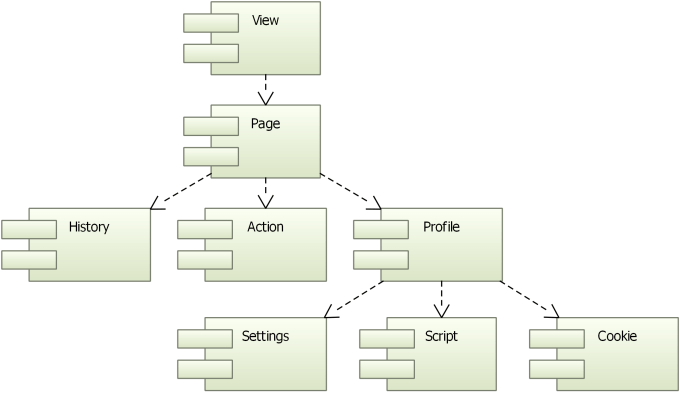

Qt WebEngine Overview
The Qt WebEngine module provides a web browser engine that makes it easy to embed content from the World Wide Web into your Qt application on platforms that do not have a native web engine.
Qt WebEngine provides C++ classes and QML types for rendering HTML, XHTML, and SVG documents, styled using Cascading Style Sheets (CSS) and scripted with JavaScript. HTML documents can be made fully editable by the user through the use of the contenteditable attribute on HTML elements.
Qt WebEngine Architecture

The functionality in Qt WebEngine is divided into the following modules:
- Qt WebEngine Widgets Module for creating widget-based web applications
- Qt WebEngine Module for creating Qt Quick based web applications
- Qt WebEngine Core Module for interacting with Chromium
Page rendering and JavaScript execution are separated from the GUI process into the Qt WebEngine Process. It is a library that must be shipped with the application if the Qt libraries are bundled into the application.
Qt WebEngine Widgets Module

A web engine view is the main widget component of the Qt WebEngine module. It can be used in various applications to load web content. Within a view, a web engine page holds a main frame that is responsible for web content, the history of navigated links, and actions. The view and page are quite similar, as they provide a set of common functions.
All pages belong to a web engine profile that contains shared settings, scripts, and cookies. Profiles can be used to isolate pages from each other. A typical use case is a dedicated profile for a private browsing mode, where no information is permanently saved.
Note: The Qt WebEngine Widgets module uses the Qt Quick scene graph to compose the elements of a web page into one view. This means that the UI process requires OpenGL ES 2.0 or OpenGL 2.0 for its rendering.
Qt WebEngine Module

The Qt WebEngine QML implementation contains the same elements as the Qt WebEngine Widgets implementation, except that there is no separately accessible web engine page. The supported page functionality is integrated into the web engine view.
Qt WebEngine Core Module
The Qt WebEngine core is based on the Chromium Project. Chromium provides its own network and painting engines and is developed tightly together with its dependent modules. Even though the QtNetwork stack is not used, its setup can be synchronized with the Qt WebEngine. See Proxy Support, Managing Certificates, Client Certificates, and QWebEngineCookieStore for more details.
Note: Qt WebEngine is based on Chromium, but does not contain or use any services or add-ons that might be part of the Chrome browser that is built and delivered by Google. You can find more detailed information about the differences between Chromium and Chrome in this overview that is part of the documentation in the Chromium Project upstream source tree.
The Chromium version used is the one used by the latest stable Chrome version at the time of Qt feature freeze for the current version of Qt WebEngine. Additional security patches are cherry picked from newer Chrome releases on every patch release, security patches released in time for the Qt patch release freeze will be included. If Chrome releases critical fixes outside our release window, the next patch release is sped up to ensure a patched Qt WebEngine is released before the patch details goes public.
If you need a newer Qt WebEngine beyond security fixes, and can not update all of Qt, Qt WebEngine supports building with older version of Qt back to the last Qt LTS. For instance Qt WebEngine 6.3, 6.4, and 6.5 can all be built with Qt 6.2. In Qt LTS releases, Qt WebEngine may be fully replaced with such a newer version to make security patching easier.
The relevant Chromium versions in question can also be read at runtime using the qWebEngineChromiumVersion() method, and qWebEngineChromiumSecurityPatchVersion() to read the current security patch level. You can also find the versions in the Qt WebEngine sources in the CHROMIUM_VERSION file.
Qt WebEngine Process
The Qt WebEngine Process is a separate executable that is used to render web pages and execute JavaScript. This mitigates security issues and isolates crashes caused by specific content.
Embedding Web Content into Widget Based Applications
Use the QWebEngineView class to display web pages in the simplest way. Because it is a widget, you can embed QWebEngineView into your forms and use its convenience functions to download and display web sites.
QWebEngineView *view = new QWebEngineView(parent); view->load(QUrl("http://www.qt.io/")); view->show();
An instance of QWebEngineView has one QWebEnginePage. QWebEnginePage can have a QWebEngineHistory that provides access to the page's navigation history and several QAction objects that apply actions on the web page. In addition, a QWebEnginePage has the ability to run JavaScript code in the context of the page's main frame and to enable customization of handlers for specific events like showing custom authentication dialogs.
Each QWebEnginePage belongs to a QWebEngineProfile that can have a QWebEngineSettings for specifying page settings, a QWebEngineScriptCollection for running scripts on the page, and a QWebEngineCookieStore for accessing the HTTP cookies of Chromium. A QWebEnginePage can also directly point to a script collection.
For a widget based application, the web engine is automatically initialized, unless it is placed in a plugin. In that case, it must be initialized in the application main source file by using QtWebEngineQuick::initialize, as illustrated by the following code snippet:
int main(int argc, char **argv) { QtWebEngineQuick::initialize(); QApplication app(argc, argv); QMainWindow window; window.show(); return app.exec(); }
Embedding Web Content into Qt Quick Applications
The WebEngineView QML type allows Qt Quick applications to render regions of dynamic web content. A WebEngineView type may share the screen with other QML types or encompass the full screen as specified within the Qt Quick application.
To make sure that OpenGL context can be shared between the GUI and render processes, the web engine must be initialized by using QtWebEngineQuick::initialize in the application main source file, as illustrated by the following code snippet:
int main(int argc, char *argv[]) { QGuiApplication app(argc, argv); QtWebEngineQuick::initialize(); QQmlApplicationEngine engine; engine.load(QUrl("qrc:/main.qml")); return app.exec(); }
An application can load pages into the WebEngineView, using either an URL or HTML string, and navigate within session history. By default, links to different pages load within the same WebEngineView object, but web sites may request them to be opened as a new tab, window, or dialog.
The following sample QML application loads a web page using the url property:
import QtQuick import QtQuick.Window import QtWebEngine Window { width: 1024 height: 750 visible: true WebEngineView { anchors.fill: parent url: "https://www.qt.io" } }
Script Injection
Qt WebEngine does not allow direct access to the document object model (DOM) of a page. However, the DOM can be inspected and adapted by injecting scripts.
The DOM of a page is constructed when the document is ready, typically when the page is completely loaded. Therefore, executing scripts as soon as a document is created is not suitable for DOM operations, where one has to wait until the DOM is ready.
In addition, an injected script shares the same world as the other scripts executed on the page, which might lead to conflicts. To avoid this, the QWebEngineScript class and the WebEngineScript QML type provide implementations of the Chromium API for Content Script Extensions. They specify the script to run, the injection point, and the world where the script is run. This enables accessing the DOM to manipulate it within a world.
Since Qt 5.8, Qt WebEngine supports augmenting a script by using the following Greasemonkey-like attributes:
@exclude <regexp>@include <regexp>@match <regexp>@name <free text>@run-at [document-start|document-end|document-idle]
The attributes determine if and when a user script is run. They must be placed immediately in the beginning of the script, inside a ==UserScript== comment:
// ==UserScript== // @include http://*.qt.io/* // @exclude http://wiki.qt.io/* // ==/UserScript== window.alert("Page is from qt.io, but not wiki.qt.io");
If your WebEngine application is built using the Qt Quick Compiler, and the application ships JavaScript files inside .qrc resources, consider reading the section JavaScript Files in Qt Resource Files.
Managing Certificates
Qt WebEngine uses its own network stack, and therefore QSslConfiguration is not used to open SSL connections. Instead, Qt WebEngine uses the root CA certificates from the operating system to validate the peer's certificate.
The WebEngineCertificateError::type and QWebEngineCertificateError::Type enumerations provide information about the types of certificate errors that might occur. The errors can be handled by using the WebEngineView::certificateError QML method or by connecting to the QWebEnginePage::certificateError signal.
Proxy Support
Qt WebEngine uses the proxy settings from Qt Network, and forwards them to Chromium's networking stack. If QNetworkProxy::applicationProxy is set, it will also be used for Qt WebEngine. If QNetworkProxyFactory::usesSystemConfiguration() is enabled, the proxy settings are automatically retrieved from the system. Settings from an installed QNetworkProxyFactory will be ignored, though.
In case QNetworkProxy::user() and QNetworkProxy::password() are set, these credentials will be automatically used for proxy authentication. It is up to the user to provide valid credentials, since there is no error handling callback.
If no credentials are set with QNetworkProxy, but the proxy requires authentication, QWebEnginePage::proxyAuthenticationRequired is emitted. For Qt Quick, a dialog is shown.
Not all properties of QNetworkProxy are supported by Qt WebEngine. That is, QNetworkProxy::type(), QNetworkProxy::hostName() and QNetworkProxy::port() are taken into account. All other proxy settings such as QNetworkProxy::rawHeader() are ignored.
High DPI Support
To support High DPI devices, it is recommended that the application attribute Qt::AA_EnableHighDpiScaling is set to enable automatic scaling based on the pixel density of the monitor. In Qt WebEngine applications, the scaling affects the default zooming factor and scrollbar size.
For example:
int main(int argc, char *argv[]) { QCoreApplication::setAttribute(Qt::AA_EnableHighDpiScaling); QApplication app(argc, argv); // ... }
Qt WebEngine bundles images for normal and high-dpi resolutions into qtwebengine_resources_100p.pak and qtwebengine_resources_200p.pak files. Depending on the target resolutions, one or both of these files need to be deployed.
For more information, see High DPI.
Using WebEngine Core
Qt WebEngine Core provides an API shared by Qt WebEngine and Qt WebEngine Widgets for handling URL requests issued for the networking stack of Chromium and for accessing its HTTP cookies.
Implementing the QWebEngineUrlRequestInterceptor interface and installing the interceptor on a profile enables intercepting, blocking, and modifying URL requests (QWebEngineUrlRequestInfo) before they reach the networking stack of Chromium.
A QWebEngineUrlSchemeHandler can be registered for a profile to add support for custom URL schemes. Requests for the scheme are then issued to QWebEngineUrlSchemeHandler::requestStarted() as QWebEngineUrlRequestJob objects.
The QWebEngineCookieStore class provides functions for accessing HTTP cookies of Chromium. The functions can be used to synchronize cookies with QNetworkAccessManager, as well as to set, delete, and intercept cookies during navigation.
Platform Notes
Qt WebEngine currently supports only Windows, Linux, and macOS. Due to Chromium build requirements it also often requires a newer compiler than the rest of Qt. See Qt WebEngine Platform Notes for further details.
Related Modules
Qt WebEngine supersedes the Qt WebKit module, which is based on the WebKit project, but has not been actively synchronized with the upstream WebKit code since Qt 5.2 and has been deprecated in Qt 5.5. For tips on how to change a Qt WebKit widgets application to use Qt WebEngine widgets, see Porting from Qt WebKit to Qt WebEngine.
The Qt WebView module allows to use a native web browser on platforms where one is available.
The Qt WebChannel module can be used to create a bi-directional communication channel between QObject objects on the C++ side and JavaScript on the QML side.